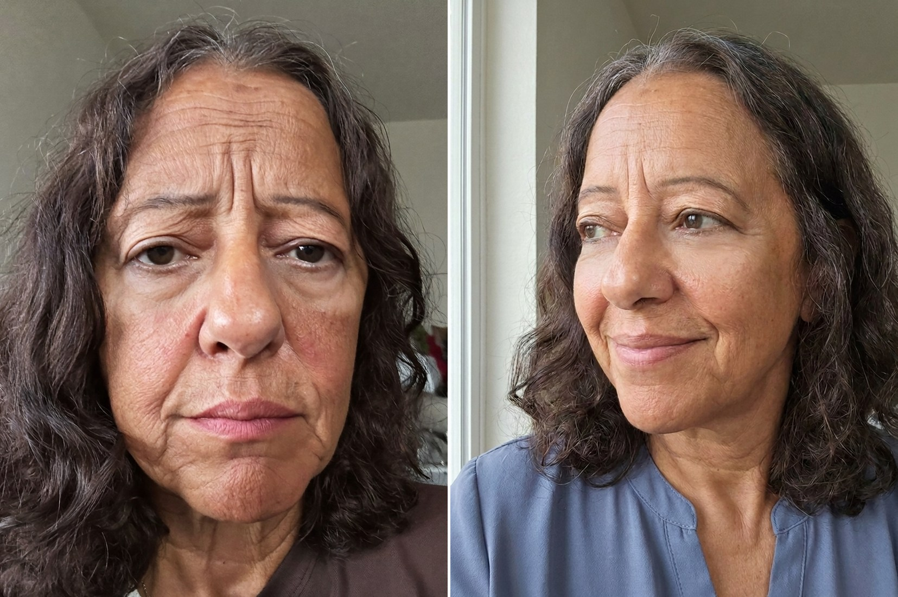

The “Topical Filler” Quietly Replacing Injectables for Women Over 45
A water-soluble retinol that absorbs deeper than ordinary creams reach. Women report visibly softer lines in as little as 12 days. No needles. No downtime.
 Before
After
Before
After
For fifteen years, Karen Doyle bought whatever the counter told her would work. Peptide creams. “Miracle” night oils. A retinol so harsh it left her flaking for a week. By 54, she had a drawer full of half-used jars and, in her words, “almost nothing to show for it.”
She was pricing out injectables, dreading the needles, when a friend told her to try one more thing first. Not another cream. A two-step serum built on a delivery technology most people have never heard of.
Why almost nothing you’ve tried has worked
Here is what the beauty aisle will not tell you: most anti-aging actives never reach the skin they are meant to treat. Wrinkles form deep below the surface. The molecules in a typical cream are too large to get there, so they sit on top and wash off by morning.
That leaves most women with bad options. Injectables work, but they mean needles, appointments, real cost, and the risk of looking frozen. Retinol can help, but harsh formulas bring peeling and redness, so many women quit within weeks. And ordinary creams change very little underneath.
| OUR PICKSoluRetinol | Injectables | Retinol cream | |
|---|---|---|---|
| Absorbs to the deep layer | ✓ | ✓ | ✗ |
| No needles or appointments | ✓ | ✗ | ✓ |
| No downtime | ✓ | ✗ | ✓ |
| Gentle, no peeling or redness | ✓ | ✗ | ✗ |
Getting retinol where it actually counts
SoluRetinol is made by SoluWellness, a Colorado skincare company, around a patent-pending delivery technology called R3a™. Instead of chasing stronger actives, they fixed the one thing everyone ignored: absorption.
The idea is simple: stop making retinol stronger, start making it absorb. A gentle active at the right depth does what a harsh one on the surface never could.
See how SoluRetinol works →Does it actually hold up?
SoluRetinol is dermatologist tested. What stands out most is how consistent the reviews are about when results show up, and it matches the company’s own timeline.

BeforeAfter“I’m 61 and the bags under my eyes made me look exhausted even when I’d slept fine. After about two months morning and night, the puffiness looks calmer and my whole face reads more rested.”
“The dark spots and uneven patches on my cheeks were the thing I hated most. A couple of months in, they’ve visibly faded and my tone looks so much more even. It’s the first thing that has actually made a difference.”
What Karen actually bought
It is SoluRetinol, a two-step Day & Night serum system. A light Daytime serum each morning, a stronger Nighttime serum before bed. That is the whole routine. No ten-step regimen, no device.

At $59 for the pair, it costs less than a single filler appointment, with no needles, no appointments, and nothing to schedule. Most women see a first change in about 12 days.
Try SoluRetinol today →